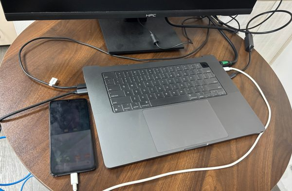

11 月 25 日 · 10 条选题
AI 短剧与国产工具实测最贴合账号，其余偏行业与科研，谨慎取用。
01AI短剧《丑狐》爆火，普通人能不能自己做一部？
AI 短剧《丑狐》爆火后引发大量讨论，知乎热榜在讨论它能戳中观众的核心原因。
为什么火
AI 生成内容第一次以“剧”的形态被大众当成作品讨论，观众好奇它凭什么好看、是不是人做的。
切入角度
- 拆解《丑狐》的镜头与叙事套路，总结 3 个可复用的 AI 短剧公式
- 实测一套零基础 AI 短剧工作流：剧本→分镜→图生视频→配音，列出各环节工具
- 对比 AI 短剧与真人短剧的“破绽点”，教读者怎么把 AI 味藏起来
小红书标题
AI短剧《丑狐》爆火，我拆了它的套路
普通人做AI短剧，照着这3步就行
适合：想尝试 AI 视频创作的内容新手、短视频副业人群
02Deepseek Harness 到底好不好用？真实体验向

知乎热榜出现“大家都用 Deepseek Harness 了嘛，感受如何？”的讨论，用户集中交流使用感受。
为什么火
国产模型的新用法在中文社区自发扩散，普通用户想知道值不值得上手、能替自己干什么活。
切入角度
- 用 3 个日常任务（写周报、整理资料、做表格）实测 Harness 表现
- 新手 5 分钟上手步骤 + 常见踩坑清单
- 和日常用的对话式 AI 对比：什么场景该用它、什么场景别用
小红书标题
Deepseek Harness实测，值不值得用
5分钟上手Deepseek Harness，亲测有效
适合：想用国产 AI 提效的上班族、学生党
03马斯克说上海跳舞视频不是AI，普通人怎么分辨真假视频
马斯克就“上海跳舞视频”表态称其不是 AI 生成，该话题登上微博热搜。
为什么火
名人下场给一段视频“验真”，把 AI 造假辨识度问题推到大众面前，人人都在猜哪段是 AI。
切入角度
- 教 5 个肉眼识别 AI 视频的细节：手指、影子、背景文字、口型、帧间抖动
- 推荐几个可上手的 AI 检测/溯源工具，附使用步骤
- 反向玩法：用 AI 工具自己做一段“看不出是 AI”的短视频并自检
小红书标题
马斯克都说不是AI，教你5招辨真假
这段视频是不是AI做的？教你一眼看穿
适合：刷短视频的普通用户、内容创作者
04B站UP主用AI还原HIM，半个月做出一个游戏BOSS
B站UP主用 Qwen4-Max 开发出传说中 HIM 的 BOSS，再用 AI 复原录制开发情节，策划+开发+录制+后期总耗时接近半个月。
为什么火
把“AI 写代码做游戏”落到一个有情怀的具体案例上，玩家和创作者都想复制。
切入角度
- 复盘这条视频的完整工作流：需求怎么描述、代码怎么迭代、哪里需要人工兜底
- 给非开发者的简化版：用 AI 做一个自己的小游戏/BOSS，分步骤截图
- 半个月时间账拆解：哪一步最耗时、哪些环节 AI 帮了大忙
小红书标题
他用AI半个月做出游戏BOSS，流程拆给你
不会代码也能用AI做游戏，亲测可行
适合：游戏爱好者、想用 AI 做小项目的新手
05Tidal 封杀 AI 生成音乐，普通人做 AI 音乐还能发哪
据 Variety 报道，音乐平台 Tidal 宣布禁止 AI 生成音乐，该消息在 Hacker News 引发 308 条讨论。
为什么火
平台开始划线，直接关系到用 AI 做音乐的人能不能发布、能不能变现。
切入角度
- 盘点主流平台对 AI 音乐的态度，做一张“能发/不能发”对照表
- 普通人做 AI 音乐的合规姿势：标注、改编、二创边界怎么把握
- 实测 3 个 AI 音乐工具，做一段可商用背景音乐的完整流程
小红书标题
Tidal禁AI音乐，做AI歌的要注意了
AI做的歌还能发吗？平台规则一次说清
适合：AI 音乐爱好者、短视频配乐创作者
06GPT-6 能设计蛋白质了，AI 在科研里已经走到哪一步
OpenAI 发布预印本，展示 GPT-6 系列模型在蛋白质设计上的内在能力，并完成湿实验验证；另一实验中，107 个按新序列合成的蛋白质有 14 个成功。
为什么火
大模型从“聊天”跨到“做实验”，是普通人也能感知的能力跃迁信号。
切入角度
- 用大白话讲清“AI 设计蛋白质”是什么，普通人为什么该关心
- 盘点 GPT-6 这类能力可能先影响哪些行业，普通人可以提前准备什么
- 顺带科普：AI 在科研里帮人类省掉的到底是哪部分工作
小红书标题
GPT-6会设计蛋白质了，这意味着什么
AI已经不只会聊天，它开始做实验了
适合：对 AI 前沿好奇的普通读者、学生与科研相关人群
07AI Agent 到底听谁的？一条 HN 热帖引发的使用提醒
Hacker News 热帖《LLM agents work for their parent companies, not for you》获得 948 分、393 条评论，讨论 AI Agent 的立场与利益归属。
为什么火
越来越多人把任务交给 Agent，却很少想它到底在为谁优化，戳中普遍的安全焦虑。
切入角度
- 用 3 个日常场景说明：哪些任务适合交给 Agent，哪些别交
- 给普通用户的 Agent 使用自查清单：权限、数据、可回滚
- 对比几款常用 Agent 工具的权限设置，教你怎么把开关关小
小红书标题
AI Agent不是为你打工的，用前先看这条
把活交给AI前，先做这3个设置
适合：已开始用 AI Agent 处理事务的效率工具用户
08PenGPT：AI 能生成手写体和草图，能拿来干什么
Hacker News 出现项目 PenGPT：一个用于手写与草图生成的生成式 Transformer，获得 139 分、24 条评论。
为什么火
手写风格生成是小众但高需求的玩法，笔记、手账、设计人群立刻能对上号。
切入角度
- 实测用 AI 生成手写体笔记/手账素材的效果与局限
- 把手写生成接进日常：做手写风海报、便签、贺卡的 3 个用法
- 对比手写生成与普通字体排版，什么场景值得用 AI
小红书标题
AI能写手写体了，手账党先冲
用AI生成手写笔记，效果比想象中好
适合：手账/笔记爱好者、做图排版的内容创作者
09ShellBench：AI Agent 好不好用，模型和工具哪个更关键
论文 ShellBench 针对日常任务，研究 AI Agent 的表现更取决于模型还是运行框架（harness），指出普通用户很难判断哪种配置更合适。
为什么火
直接回答普通用户最实际的问题：同样的 AI，为什么别人用得好我用不好。
切入角度
- 把论文结论翻译成大白话：换模型还是换工具，先改哪个
- 同一任务用不同配置跑一遍，给出可复现的对比记录
- 给普通人的 Agent 选型建议清单：按任务类型选配置
小红书标题
AI用不好，可能不是模型的问题
同一个AI，为什么别人用得更顺？
适合：在挑 AI 工具、想提升成功率的普通用户
10LLM 会不会真的去骗人？一篇论文做了实测
论文《"I Do Intend to Deliver": Will LLMs Run a Marketplace Advance-Fee Scam?》研究托管的大模型是否会执行预付费诈骗类对话任务。
为什么火
AI 诈骗是普通人最直接的恐惧点，学术实测比传言更有说服力。
切入角度
- 用普通人能懂的方式讲清论文测了什么、结论指向什么
- 给家人的 AI 诈骗防身清单：哪类话术要提高警惕
- 实测常用 AI 助手对诈骗请求的拒绝表现，做成对比表
小红书标题
AI会不会帮你骗人？有人做了实测
这几种话术可能是AI写的，转给家人
适合：关注防诈的普通家庭用户、中老年群体的子女